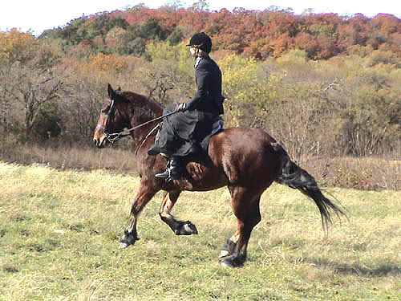

Opening Hunt Meet
- Sidesaddle It was just an awsome day
all around. We went first flight, had some galloping
runs and got the chance
to jump a number of fences. I was also lucky enough to
be the one to view the coyote
and tell our field master so he could view hallo to the huntsman.
I did panic on our first
gallop, but as the huntsman said, you can only get so scared...
At the one jump that I'd
always gone around (not an option this time with the coyote on the other
side
and no gate nearby), I basically
trotted toward it and dropped the reins.
Thuy was happy to take care
of the rest (and it felt no different than the other jumps aside)...
Exhausted and sore at the
end, it was all worth it.
http://www.hickorycreekhunt.com/031129web/
for more pictures from the hunt
After mounting up, Thuy saw no reason
to stand around for pictures...
Heading over to the blessing.
Thuy being blessed (and mugging the
Priest for a treat).
Thuy was happy for something to eat
during the blessing ceremony.
Thuy's in front in this picture. Our
First flight field master is just out of the shot.
Here we are following Aver.
Thuy is great about balancing on his
hind end when we're going downhill.
Heading out after partaking of the
hospitality wagon.
(I was proud to figure out that my flask
fits nicely against my upper pommel, under the rubberband that holds the
queen on my sidesaddle - creme de minte, creme de cocao and creme brule
were in there this hunt - yum)

What a great sidesaddle horse.
We did a lot of jogging to keep up
with the long legged horses.
Right lead cantering was the most
comfortable, but sometimes I'd forget and we'd get the left. On a couple
of occassions when we were galloping, I think he switched to a cross canter,
which felt horrible.